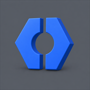

Compare the current tile with the lighter, angled 3D candidate. On iPhone, view this page at 100% zoom; 60 pt corresponds to the 180 px @3× Home Screen asset.
Current
flat mark · black fill
Light wallpaper
60 pt40 pt29 pt
Dark wallpaper
60 pt40 pt29 pt
Angled 3D
lighter graphite · 66%
Light wallpaper

60 pt40 pt29 pt
Dark wallpaper
60 pt40 pt29 pt
Source-size detail
Current180 × 180 raster, shown on black as iOS currently presents its transparent background.
Angled 3D180 × 180 production-size raster, used directly for every iPhone-size test above.
Design candidate only. The installed Web Tools icon has not changed.